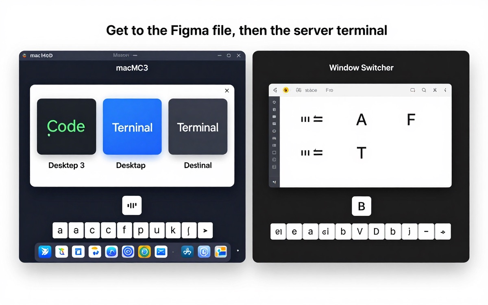
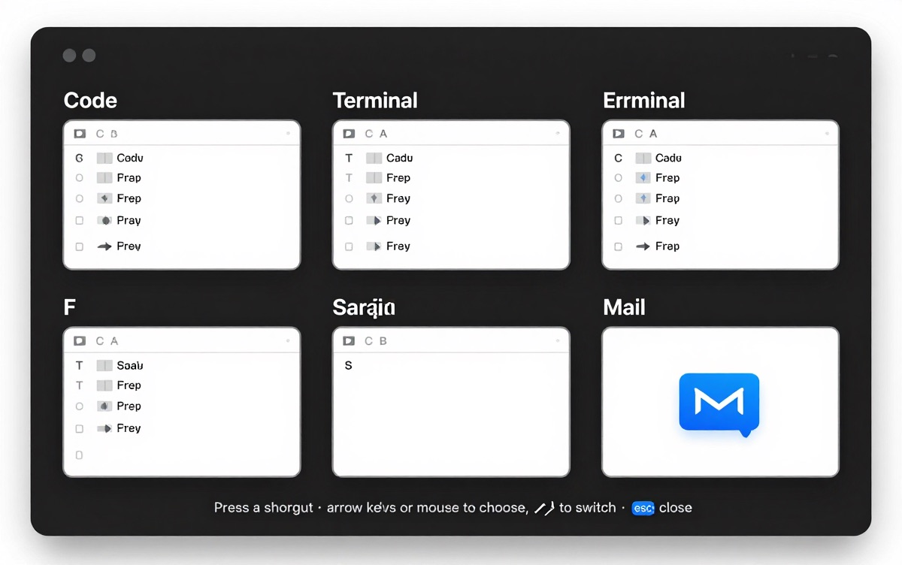

The Mac's app switcher, with a key for every window.
⌘⇥ is built in, always there, and good at what it does: jumping between open apps. Window Switcher picks up where it stops, at the windows inside those apps, wherever they are.
Quick answer
Stay with ⌘⇥ if you mostly have one window per app and like cycling through icons. Choose Window Switcher if you have several windows per app or several desktops, and want to reach any of them with a key you already know.
What each one gives you.
"macOS" here means the tools that come with it: ⌘⇥ for apps, ⌘` for the front app's windows, and Mission Control.
| Window Switcher | macOS | |
|---|---|---|
| Cost and setup | ||
| Price | Free | FreeBuilt in |
| Works on Intel and Apple silicon | YesmacOS 13 Ventura or later | Yes |
| Every app has a key from the start | YesUsually its first letter | NoApps are cycled, not keyed |
| Getting to a window | ||
| Pick a window, not just an app | YesApp's key, then the window's letter | Partly⌘` cycles the front app's windows; ⌃↓ shows them |
| One key for a favourite window | YesMatched by its title | No |
| Keys that stay the same | YesApp keys stay put; window letters follow opening order | NoApps are ordered by most recent use |
| Window titles you can read | YesEvery window listed by name | PartlyMission Control shows thumbnails |
| Desktops and Spaces | ||
| Windows on other desktops in the same list | YesIncluding full-screen apps | PartlyOther desktops show as thumbnails in Mission Control |
| Go straight to a window on another desktop | YesChoose it and you're there | Partly⌘⇥ goes to a desktop with that app's windows |
| Everyday use | ||
| Stays open after you let go | YesWaits for your key, or Esc | NoCloses when you release ⌘ |
| Opens apps that aren't running | YesFor apps you've given a key | NoOpen apps only |
| Chrome windows grouped by profile | YesIn each profile's colour | No |
| Can open with ⌘⇥ | YesOptional; macOS's comes back when it quits | Yes |
| Runs nothing between uses | YesWakes on the shortcut | YesPart of macOS |
Sources: Apple, "Mac keyboard shortcuts" (support.apple.com/en-us/102650), "View open windows and spaces in Mission Control" (mh35798) and "Work in multiple spaces" (mh14112), checked 25 Nov 2026. Apple describes ⌘⇥ as switching among "your open apps" and ⌘` as switching "between the windows of the app you're using". Our own reading, not stated by Apple: "Closes when you release ⌘", "Open apps only" and "Apps are cycled, not keyed".
The moments ⌘⇥ leaves you hunting.
Three windows, one app
⌘⇥ gets you to Terminal. Then ⌘` until it's the right terminal. With Window Switcher it's T B.
The other desktop
The design file is on Desktop 3. You swipe, look, swipe back. Here it's listed with everything else.
The wrong Chrome
Personal and work windows look the same in ⌘⇥. Here each sits under its profile, in its colour.
The order keeps changing
⌘⇥ puts the last app first, so positions move all day. Keys don't.
Letting go too early
Release ⌘ a moment too soon and you're in the wrong app. Window Switcher waits until you press something.
The app that's closed
Give it a key and it's in the list even when it isn't running. Press the key and it opens.
Press what you know instead of watching for it.
With ⌘⇥ you press ⇥ and watch the highlight move, because the order changes as you work. With Window Switcher, an app's key and a window's letter stay put, so after a few days you stop reading the list at all.

AI draft · replaceSpaces without the swiping.
Mission Control shows the windows on the desktop you're on, with other desktops as small thumbnails along the top. Window Switcher lists the windows on every desktop and full-screen app together, each with a key, and takes you to the right desktop when you choose one.

AI draft · replaceWho the built-in switcher suits.
macOS's tools are good, and plenty of people never need more.
People who want only what came with the Mac.
⌘⇥ is on every Mac, works the same on every Mac you sit down at, and needs no setup or permissions.
People who navigate with gestures.
Mission Control and App Exposé are a swipe away on a trackpad, and moving between desktops is a three- or four-finger swipe.
People who find things by how they look.
Mission Control shows live thumbnails of every window on the desktop. If you remember windows by their layout more than their names, that's hard to beat.
Switching over.
Can I keep using ⌘⇥ as well?
Yes. By default Window Switcher opens with ⌥⇥ and leaves ⌘⇥ exactly as it is, so you can use both.
What if I want ⌘⇥ to open Window Switcher?
Turn on "Also open with ⌘⇥, replacing the macOS app switcher" in Settings → General. The macOS switcher comes back whenever Window Switcher quits.
Does it replace Mission Control?
No. Mission Control keeps working as it always has. Many people find they open it less, because Window Switcher already shows windows on every desktop.
Does it cost anything?
No. It's free, with no account and no trial.
Which Macs does it run on?
Any Mac with macOS 13 Ventura or later, Apple silicon or Intel.
Press ⌥⇥. Then the next key you want.
Free for the Mac. No account, nothing running in the background, and every app has a key the moment it's installed.
Download Window Switcher for Mac